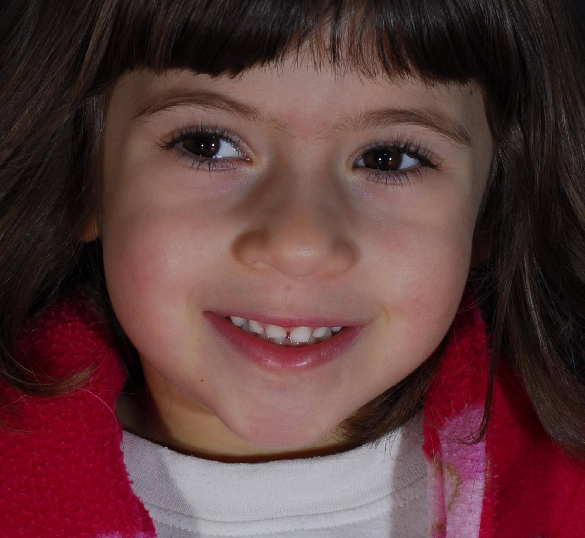
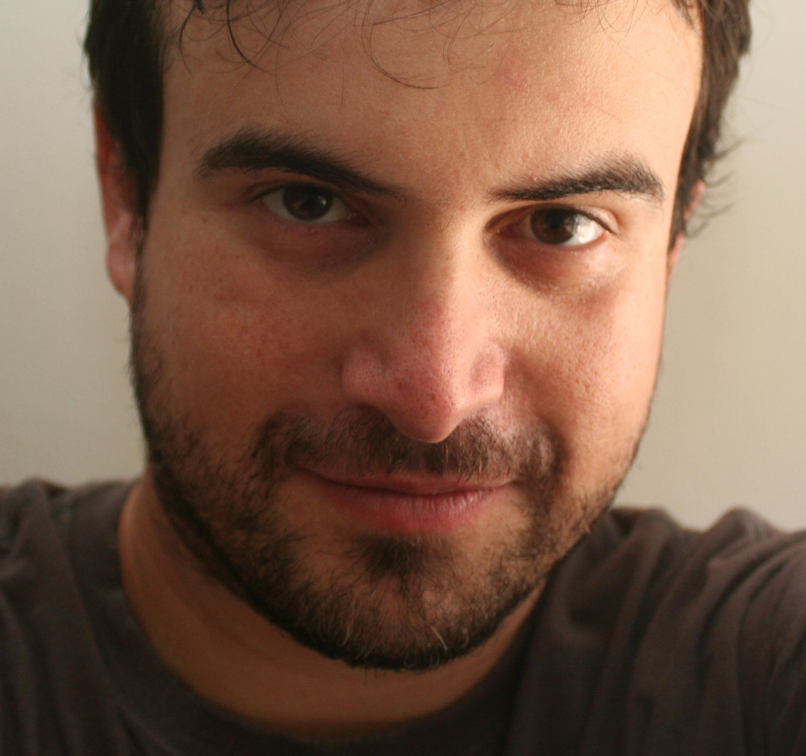

Source selection
Open complete comparison · Input records
Analysis coordinates belong to the selected raster. Original uploaded bytes remain in input_a.image and input_b.image. Previews use stored orientation, not EXIF display rotation. Selecting a crop does not establish anatomical accuracy.
A · input_a.image
Original 1584 × 1455 pixels. Selected columns [0, 1584) and rows [0, 1455): 1584 × 1455 pixels.
Original stored orientation · amber outline is the selected region.

Actual analysis input · no resampling.
To recover original pixel centers, add (0, 0) to the selected-raster coordinates.
Original bytes: 4b8a6ad134d142344bb1fbab20722cb33720dc9a49775c16cfc80723aa95979c
Analysis RGB array: ff4e21cf7a785b796f2bdbcf2a59ccc670e678e460678f26f6d4cc2a7fae0e9c
B · input_b.image
Original 1974 × 1853 pixels. Selected columns [0, 1974) and rows [0, 1853): 1974 × 1853 pixels.
Original stored orientation · amber outline is the selected region.

Actual analysis input · no resampling.
To recover original pixel centers, add (0, 0) to the selected-raster coordinates.
Original bytes: 27b150cfaf33d8eb1ca42cfbc25eb23dd7c6f0711690b91e17e0d88322f297e8
Analysis RGB array: b7e78e7924b2eccded17bdf683f365eac7c34e3e59b2d4d3718f2caee110395a